COZY TITLE RENAMER
코지곡제목변경기
사용설명서
수노에서 받은 곡이 "봄날의 노래(1)", "봄날의 노래(2)" 처럼 같은 이름으로 쌓였을 때, 곡마다 서로 다른 새 제목을 붙여 한꺼번에 바꿔 주는 프로그램입니다.
AI 키도 필요 없고, 처음 정품 인증할 때 말고는 인터넷이 없어도 됩니다. 처음이시면 1번부터 차례대로 따라 하세요.
1
준비물
- 윈도우 컴퓨터 (윈도우 10 또는 11, 64비트)
- 라이선스 키 — 메일로 받으신
KIT-로 시작하는 글자입니다. - 이름을 바꿀 음악 파일 — mp3, wav, flac, m4a, ogg, aac, mp4 파일을 바꿀 수 있습니다.
먼저 해 두면 안심
이름을 바꾼 뒤에는 되돌리는 단추가 없습니다. 처음 써 보실 때는 음악 폴더를 통째로 한 벌 복사해 두고 시작하시면 안심입니다.
2
설치하기
-
메일의 설치파일 링크를 눌러 파일을 받습니다.
받는 파일 이름은
CozyTitleRenamer-Setup-v1.1.0.exe입니다.
받기가 끝나면 보통 다운로드 폴더에 들어 있습니다.설치파일 받기 (CozyTitleRenamer-Setup-v1.1.0.exe)
인터넷 창이 경고를 할 때
인터넷 창(엣지, 크롬)이 "흔히 받는 파일이 아닙니다" 같은 말을 하며 받기를 멈출 수 있습니다. 그 줄 옆의 점 세 개(…)나 화살표를 눌러 유지 또는 계속 을 고르시면 받아집니다.
-
받은 파일을 마우스 왼쪽 단추로 빠르게 두 번 누릅니다.
-
파란 창 "Windows의 PC 보호"가 뜨면, 글자 추가 정보 를 누릅니다.

설명을 위해 다시 그린 그림입니다. 실제 창은 조금 다를 수 있어요. -
아래에 생긴 실행 단추를 누릅니다.
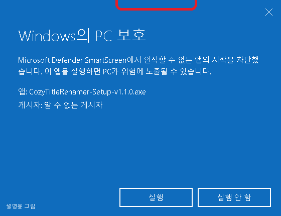
설명을 위해 다시 그린 그림입니다. 안심하세요
바이러스가 있다는 뜻이 아닙니다. 아직 널리 알려지지 않은 새 프로그램이라서 윈도우가 한 번 물어보는 것입니다. 이 창이 안 뜨면 이 단계는 건너뛰세요.
-
"바탕화면에 바로가기 만들기"에 체크가 된 것을 보고 다음 을 누릅니다.
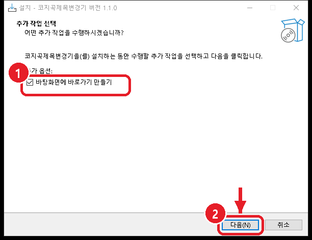
이 앞에 "설치할 위치"를 묻는 화면이 나오면 아무것도 바꾸지 말고 다음 을 누르세요.
-
설치 를 누릅니다.
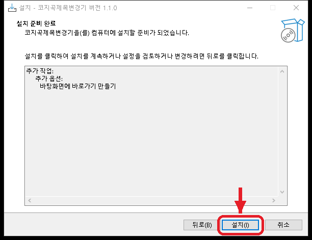
-
설치가 끝나면 마침 을 누릅니다.
프로그램이 저절로 켜집니다. 다음부터는 바탕화면의 코지곡제목변경기 그림을 두 번 눌러 켜시면 됩니다.
예전 이름(곡제목변경기, 곡 이름 변경기)으로 깔린 옛 판이 있으면 설치하면서 저절로 정리됩니다.
3
정품 인증 (처음 한 번만)
프로그램을 처음 켜면 작은 "정품 인증" 창이 먼저 뜹니다.

-
메일로 받으신 라이선스 키를 칸에 넣습니다.
메일에서
KIT-로 시작하는 글자를 마우스로 끌어 칠한 뒤 Ctrl 을 누른 채 C 를 눌러 복사하고, 칸을 한 번 누른 다음 Ctrl 을 누른 채 V 를 누르면 붙여 넣어집니다. 직접 쳐서 넣으셔도 됩니다.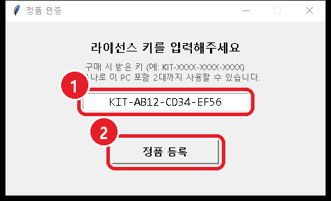
사진의 키는 예시입니다. 받으신 키를 넣으세요. -
정품 등록 을 누릅니다.
초록 글씨로 "정품 등록 완료!" 가 나오고, 잠시 뒤 창이 닫히면서 프로그램이 열립니다.

알아 두세요
- 키 하나로 컴퓨터 2대까지 쓸 수 있습니다.
- 한 번 등록하면 다음부터는 이 창이 안 뜹니다.
- 등록할 때는 인터넷이 꼭 필요합니다. 빨간 글씨로 "서버에 연결할 수 없습니다"가 나오면 인터넷 연결을 확인하고 다시 눌러 주세요.

4
화면 살펴보기
어두운 색 화면이 뜨면 정상입니다. 자주 쓰는 곳은 네 군데뿐입니다.
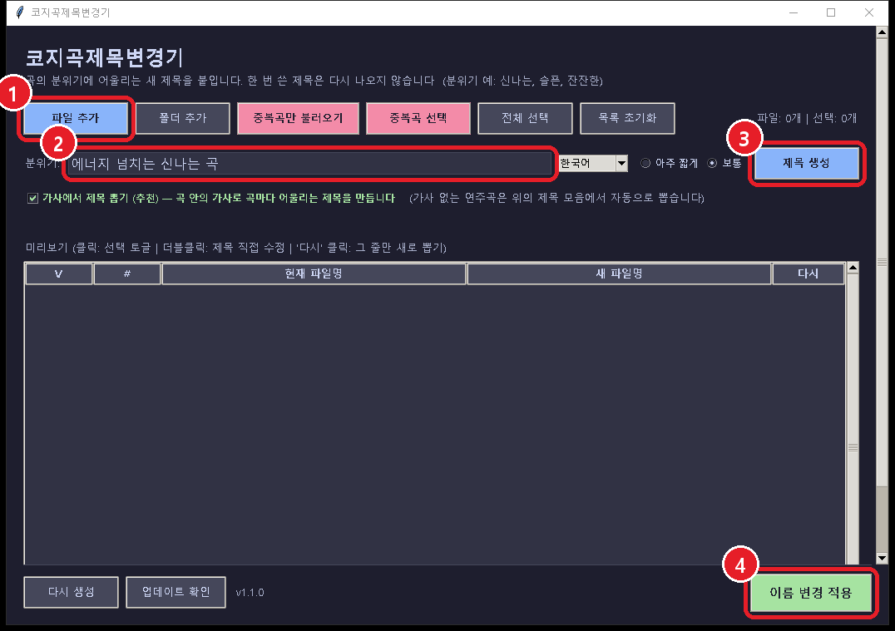
5
제목 바꾸기 — 처음부터 끝까지
가. 음악 파일 불러오기
방법이 네 가지 있습니다. 편한 것 하나만 쓰세요.
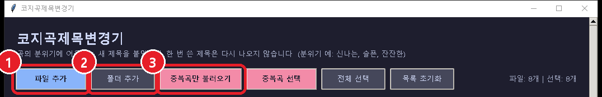
불러오면 목록에 곡이 나오고, 오른쪽 위에 몇 개인지 나옵니다.
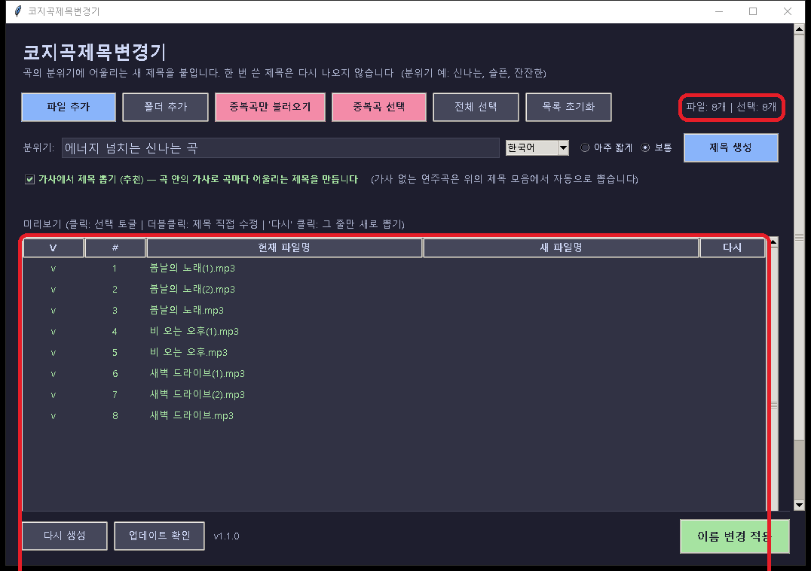
나. 바꿀 곡 고르기
처음에는 불러온 곡이 모두 선택되어 있습니다(맨 왼쪽 V 칸에 v 표시). 번호 붙은 곡만 바꾸고 싶으면 아래처럼 하세요.
-
분홍 단추 중복곡 선택 을 누릅니다.
(1), (2) 처럼 번호가 붙은 곡만 v 표시가 남고, 번호 없는 원래 곡은 v 가 빠집니다. v 가 빠진 곡은 이름이 바뀌지 않습니다.
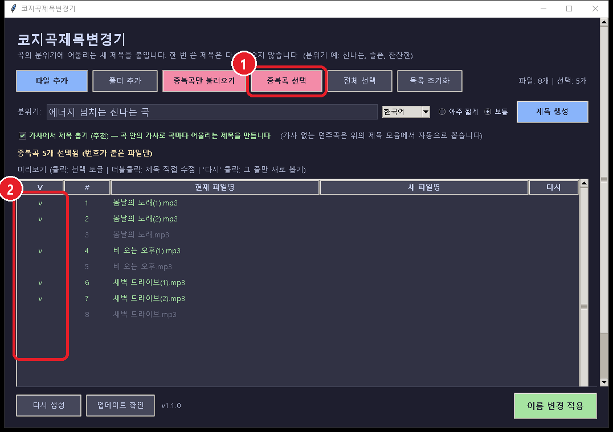
-
하나씩 바꾸려면 그 줄의 맨 왼쪽 V 칸을 한 번 누릅니다.
누를 때마다 v 가 생겼다 없어졌다 합니다. 다시 전부 고르려면 전체 선택, 목록을 비우려면 목록 초기화.
다. 분위기 적고 제목 만들기
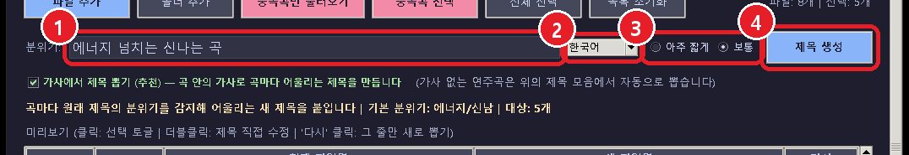
-
"분위기" 칸의 글을 지우고 원하는 느낌을 한글로 적습니다.
처음에는 "에너지 넘치는 신나는 곡"이 적혀 있습니다. 예시:
신나는 느낌신나는, 파워풀한, 댄스사랑 느낌사랑, 로맨틱한, 달달한, 설레는슬픈 느낌슬픈, 이별, 눈물, 그리움차분한 느낌잔잔한, 힐링, 편안한어두운 느낌어두운, 미스터리, 공포희망적 느낌희망, 꿈, 용기원래 곡 이름에 이미 느낌이 드러나 있으면(예: "이별의 밤") 곡 이름 쪽 느낌을 먼저 따릅니다. 분위기 칸은 그렇지 않은 곡에 쓰입니다.
-
제목 언어를 고릅니다.
분위기 칸 오른쪽의 한국어 칸을 누르면 English(영어), 日本語(일본어) 등 12가지 언어가 나옵니다. 한국어 제목이면 그대로 두세요.
-
제목 길이를 고릅니다.
보통 이 기본입니다. 짧은 제목을 원하면 아주 짧게 앞의 동그라미를 누르세요.
-
파란 단추 제목 생성 을 누릅니다.
목록의 새 파일명 칸에 새 제목이 나옵니다. 아직 실제 파일은 바뀌지 않았습니다. 마음껏 다시 만들어 보셔도 됩니다.
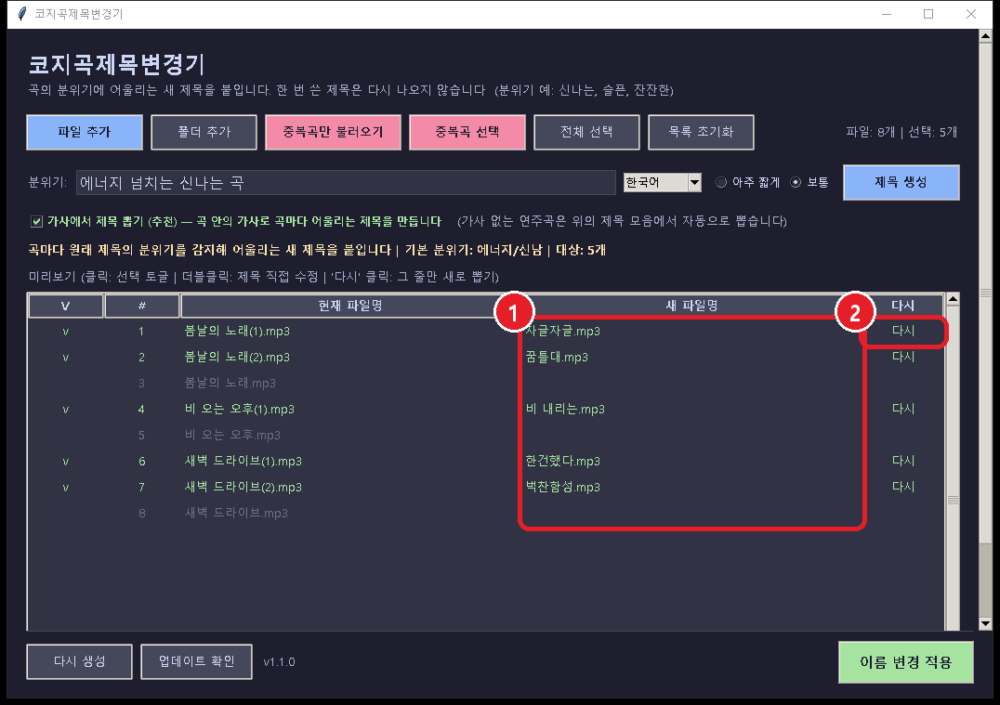
가사에서 제목 뽑기
분위기 칸 아래 "가사에서 제목 뽑기 (추천)" 에 체크가 되어 있으면, 곡 파일 안에 가사가 들어 있는 곡은 그 곡 가사 속 말로 제목을 만듭니다(위 사진의 "비 내리는"). 가사가 없는 연주곡은 프로그램에 들어 있는 제목 모음에서 고릅니다. 체크는 그대로 두시길 권합니다.
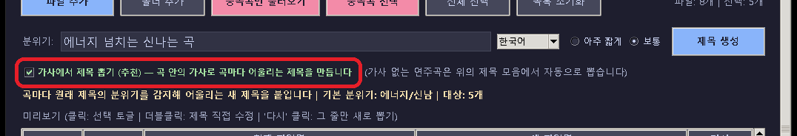
라. 마음에 안 드는 제목 바꾸기
- 한 줄만 새로 — 그 줄 맨 오른쪽 다시 글씨를 한 번 누르면 그 곡만 다른 제목으로 바뀝니다.
- 전부 새로 — 화면 왼쪽 아래 다시 생성 을 누르면 고른 곡 전체를 새로 만듭니다.
- 내가 직접 — 아래처럼 고칩니다.
-
고치고 싶은 새 제목을 마우스로 빠르게 두 번 누릅니다.
글자를 쓸 수 있는 칸으로 바뀝니다.
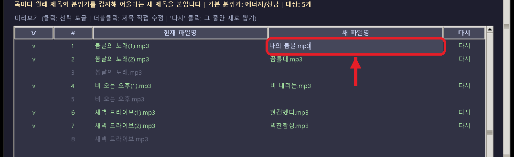
-
원하는 제목을 적고 Enter 를 누릅니다.
끝의 .mp3 는 지우지 마세요
칸에는
.mp3같은 끝부분까지 함께 들어 있습니다. 이 부분을 지우면 바뀐 파일이 음악 파일로 열리지 않을 수 있습니다. 점 앞의 글자만 고치세요. 고치다 그만두려면 Esc 를 누르세요.
마. 실제로 이름 바꾸기
이 단추부터는 진짜로 바뀝니다
새 제목을 위아래로 한 번 훑어보고 누르세요. 되돌리는 단추가 없습니다.
-
오른쪽 아래 초록 단추 이름 변경 적용 을 누릅니다.
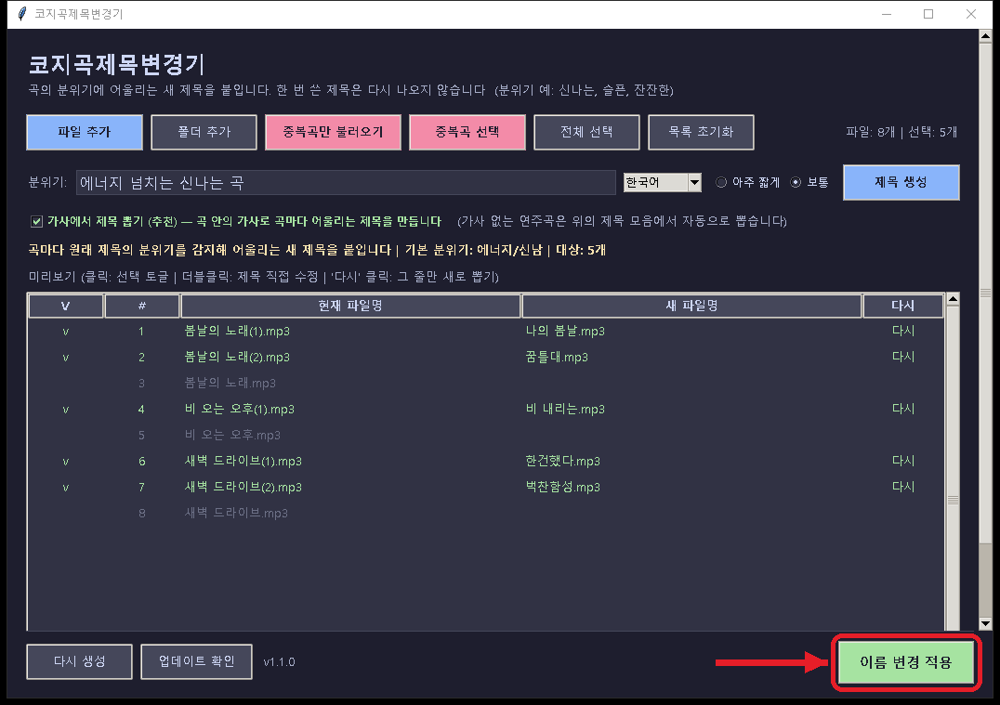
-
"○개 파일의 이름을 변경하시겠습니까?" 창에서 예 를 누릅니다.
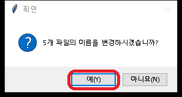
-
"완료: ○개 파일 이름 변경 성공"이 나오면 확인 을 누릅니다.
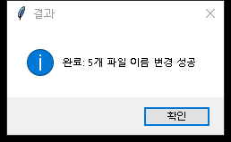
목록의 "현재 파일명"이 새 이름으로 바뀌어 있습니다. 바뀐 파일은 원래 있던 폴더에 그대로 있습니다.
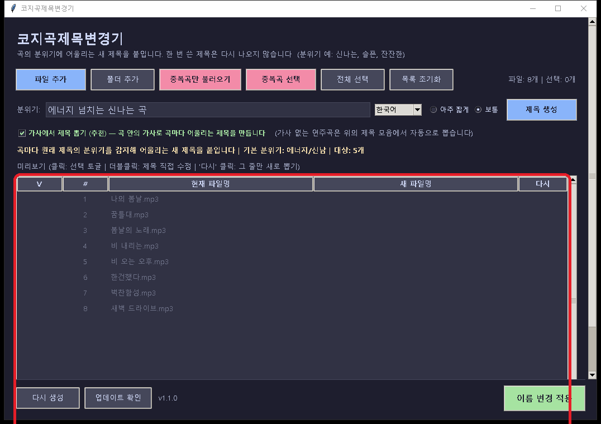
6
더 알아 두면 좋은 것
- 한 번 쓴 제목은 다시 안 나옵니다. 실제로 이름을 바꾼 제목은 프로그램이 기억해 두었다가, 다음에 또 써도 겹치지 않게 합니다.
- 같은 폴더에 이미 있는 이름은 피합니다. 그래도 겹치면 그 곡만 바뀌지 않고 결과 창에 "(이미 존재)"라고 알려 줍니다.
- 번호로 알아보는 모양 — 이름 끝의
(1)[2]-1_2같은 번호를 "중복곡"으로 봅니다.-2020처럼 네 자리 숫자는 중복곡으로 보지 않습니다.
7
자주 묻는 것
다른 컴퓨터에서도 쓰고 싶어요
키 하나로 컴퓨터 2대까지 쓸 수 있습니다. 다른 컴퓨터에 2번(설치)과 3번(정품 인증)을 똑같이 하고 같은 키를 넣으시면 됩니다.
컴퓨터를 바꾸셔서 3대째에 넣어야 한다면 아래 문의처로 연락 주세요. 정리해 드립니다.
업데이트(새 버전)는 어떻게 하나요?
프로그램을 켤 때 새 버전이 있는지 저절로 확인합니다. 새 버전이 있으면 "새 버전이 나왔어요" 창이 뜹니다. 예 를 누르면 받은 뒤 프로그램이 잠깐 꺼졌다가 새 버전으로 다시 켜집니다.
직접 확인하려면 왼쪽 아래 업데이트 확인 을 누르세요.
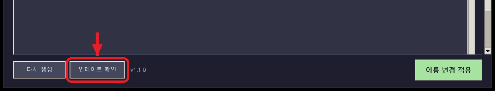
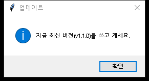
코지업로더를 설치할 때 함께 깔린 경우에는 코지업로더를 업데이트하면 이 프로그램도 함께 바뀝니다.
프로그램이 안 켜져요 / 정품 인증 창이 또 떠요
- 처음 켤 때는 잠깐 기다려야 할 수 있습니다. 조금만 기다려 주세요.
- 인터넷을 확인하세요. 정품 확인은 며칠에 한 번 인터넷으로 합니다. 인터넷이 없어도 마지막 확인 뒤 2주까지는 그냥 켜집니다.
- 정품 인증 창이 다시 뜨면 받으신 키를 한 번 더 넣고 정품 등록 을 누르세요.
- 그래도 안 되면 설치파일로 다시 설치해 보시고, 문의처로 알려 주세요.
키를 넣었더니 "전용"이라는 안내가 나와요
다른 프로그램(예: 코지음악프롬프트생성기)용 키를 넣으신 것입니다. 메일에서 코지곡제목변경기용 키가 맞는지 확인해 주세요. 두 프로그램을 묶음으로 사셨다면 같은 키가 둘 다에 들어갑니다.
파일을 넣었는데 목록에 안 나와요
음악 파일(mp3, wav, flac, m4a, ogg, aac, mp4)만 들어옵니다. 다른 종류의 파일은 넣어도 목록에 나오지 않습니다.
중복곡만 불러오기 로 넣었다면 번호 붙은 곡만 들어옵니다. 번호 붙은 곡이 하나도 없으면 "번호가 붙은 중복곡이 없습니다" 창이 뜹니다.
"먼저 파일을 추가해주세요" 창이 떠요
목록이 비어 있는데 제목 생성 을 누르신 것입니다. 5번 가부터 파일을 먼저 불러오세요. "이름을 변경할 파일을 선택해주세요"가 뜨면 V 칸에 v 표시가 하나도 없는 것입니다.
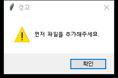
이름을 바꿨는데 원래대로 돌리고 싶어요
안타깝지만 저절로 되돌리는 기능은 없습니다. 파일 탐색기에서 파일을 하나 누르고 F2 를 누르면 이름을 직접 고칠 수 있습니다. 그래서 바꾸기 전에 꼭 확인해 주세요.
결과 창에 "(이미 존재)"라고 나와요
같은 폴더에 같은 이름의 파일이 이미 있어서 그 곡은 바꾸지 않았다는 뜻입니다. 그 곡 줄의 다시 를 눌러 다른 제목을 받거나 직접 고친 뒤 이름 변경 적용 을 한 번 더 누르세요.
영어(다른 나라 말) 제목으로 바꾸고 싶어요
분위기 칸 오른쪽의 한국어 칸을 눌러 English 등을 고른 뒤 제목 생성 을 누르세요.
프로그램을 지우고 싶어요
윈도우 시작 단추 → 설정 → 앱 에서 코지곡제목변경기 를 찾아 제거 를 누르세요. 시작 메뉴의 코지곡제목변경기 제거 를 눌러도 됩니다.
8
문의
궁금한 점이나 안 되는 것이 있으면 구매하신 와디즈 메시지 또는 키를 받으신 메일에 답장으로 알려 주세요.
연락처: 이 메일(cozy_uploader@naver.com)로 보내 주시거나, 받으신 안내 메일에 답장해 주세요
문의하실 때 화면 사진을 함께 보내 주시면 더 빨리 도와드릴 수 있습니다.